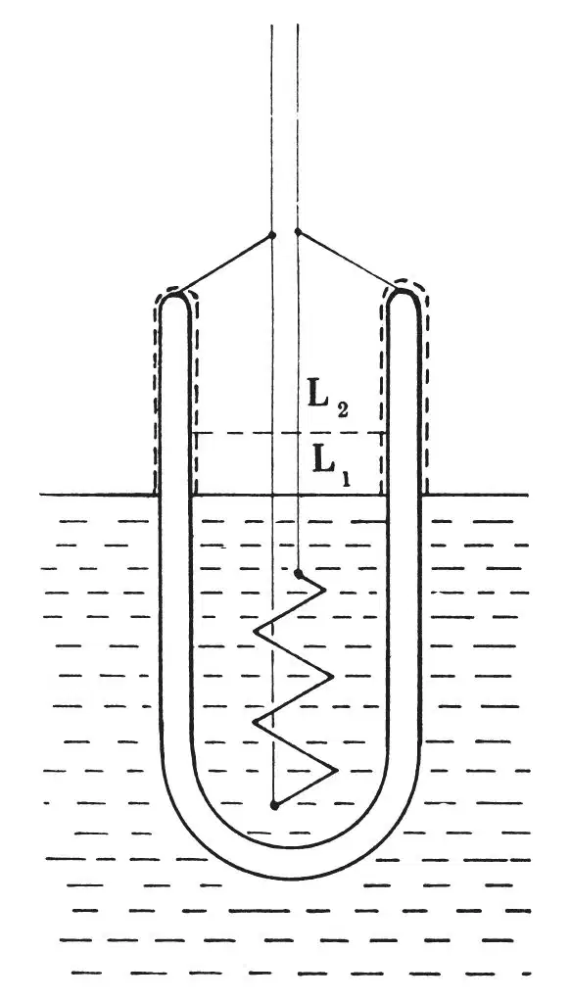
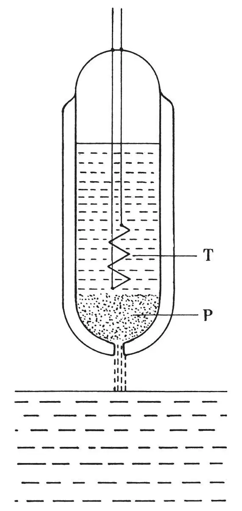

英文
英文当特，门德尔松
编者按
最近的实验研究发现了液氦的一些奇特的行为，特别是它似乎具有完全无黏滞流动的能力。而在这篇文章中，牛津克拉伦登实验室的物理学家约翰·当特和库尔特·门德尔松报道了一个更为古怪的效应。他们将一个盛有液氦的上端开口的容器放置于液氦池中。在容器内加热时，他们发现有一薄层液膜向上流动，越过容器的边缘将两部分分开的液体连接在一起。本文作者认为这个现象可能与当时刚刚为人所知的“喷泉效应”有关，在“喷泉效应”中，微弱的光束产生的热量就可以使液氦从容器中喷射而出。 英文
之前关于液氦II通过液面上的表面膜进行“迁移”的讨论中[1]，我们强调这种“迁移”与所谓自由液体中的传输现象非常相似，并指出后者可能是由一个类似于在液面上迁移的过程引起的。后来关于表面膜形成的一些实验[2]似乎进一步证实了这种说法，即在液面下存在着类似的表面传输，而且我们最近做的两项观察实验似乎也证实了这一假设：
（a）用一根线系着一个装有加热线圈的小杜瓦瓶（如图1）浸没在液氦II中。当不加热的时候，杜瓦瓶内外的液面通过自我调节达到相同的高度L1，这是由于液氦II以膜的形式在相互连接的玻璃表面“迁移”造成的。然而，当给加热线圈通以电流的时候，杜瓦瓶内的液面会上升到高于瓶外的液面并稳定在高度L2。如果用一些金属丝来增加杜瓦瓶与池中液氦的接触面积，瓶内外的液面高度差就可以上升到5毫米。这清楚地表明，当存在温度差的时候，氦会从温度较低的地方“迁移”到温度较高的地方。然而，当进一步加热时，瓶内的蒸发就成为主导因素，因此，杜瓦瓶内的液面会下降到低于池中的液面高度。 英文

图1 英文
这一效应与艾伦和琼斯[3]在体相液体中发现的“喷泉现象”极为相似。然而，在我们的实验中，液体迁移必须通过液面上的表面膜才能实现，这说明：即使两个容器之间没有自由液体相连通，也会存在与温度梯度方向相反的液氦流。有人也许因此得出结论：瓶内液体中的“喷泉现象”可能也是由于表面迁移而产生的，尽管在这种情况下迁移处于液面之下。下面的事实则进一步证实了这一假设：当用装有细粉的管子连接两个容器中的液体时，产生的“喷泉现象”比用直毛细管时更加明显，因为毛细管可进行迁移的表面积相对较小[4]。 英文
（b）一个顶部封闭的杜瓦瓶（如图2）底部有一个洞，洞口上方是由细金刚砂粉形成的填塞物P。瓶中还有一个由磷青铜制成的温度计T，它被悬挂在液氦II池中。当杜瓦瓶被升高到液氦II池面以上时，瓶内的液体很快地通过P流入液氦II池中，同时，瓶内液体的温度升高约0.01度。当降低杜瓦瓶使液体得以从液氦II池流入瓶中的时候，瓶内液体的温度也降低了大体相同的度数。 英文

图2 英文
这一机械–热效应显然与“喷泉现象”正好相反，因为后者说明温度差导致了液氦II流的形成，而机械–热效应则显示液氦II流的形成伴随着温度的变化。实际上，蒂萨[5]根据通过毛细管的液氦II流曾提出过关于这一热效应的假设。不过，在我们看来，与其说液氦II流的异常现象是由毛细管流引起的，不如说是由固体表面传输造成的；这些结果似乎表明，那些在表面传输的原子的热容肯定低于平均值。体相液体中的传输现象是（至少主要是）由一种类似于液面上的“迁移”的表面传输而引起的，这一假设似乎与艾伦和麦色纳[6]以及伦敦[7]的观察结果相一致，同时也与伦敦[8]的理论研究相吻合。 英文
有关上述以及其他一些研究成果的尝试性解释，我们将在别处进行更为详细的讨论。 英文
（李世媛 翻译；于渌 审稿）